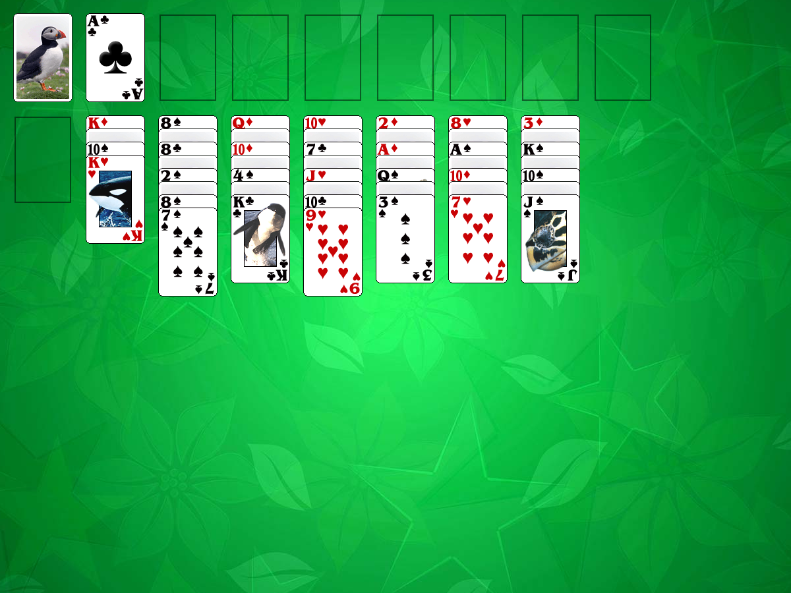

This solitaire uses 104 cards (2 decks). You have 7 vertical tableau piles with 7 cards in each pile. Some cards in these piles are closed.Aces are moved to the foundations as they become available.
The object of the game is to build the foundations up in suit to Kings.
The rules: All top cards of tableau piles are available to play.
You can move cards from one tableau pile to another one.
You may build tableau piles down regardless of suit.
You can move either a single card or a set of cards.
When one of the piles becomes empty you can fill the
space with any available single card or set of cards.
If, during play, any of closed cards becomes the top
card of a pile, it is automatically turned over.
